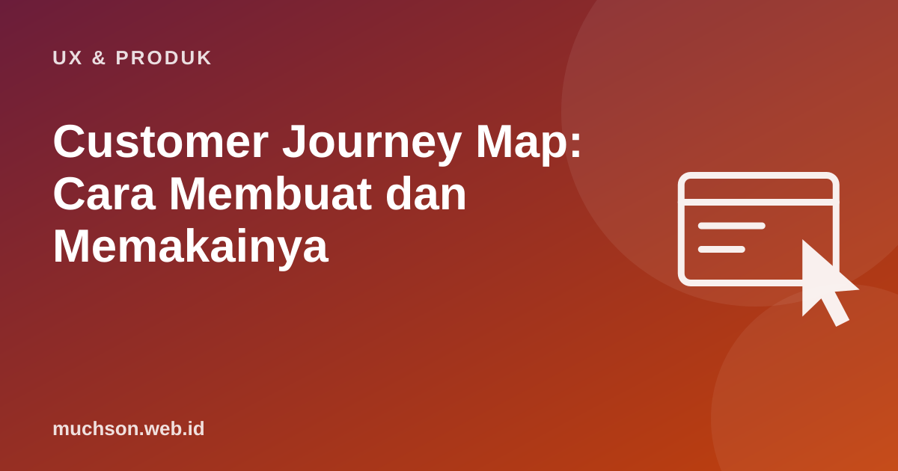

Beranda › Artikel › UX & Produk
UX & ProdukCustomer Journey Map: Cara Membuat dan Memakainya
Pelanggan tidak mengalami produk Anda per fitur, melainkan sebagai perjalanan: melihat iklan, membandingkan, mendaftar, menunggu, memakai, menghubungi CS, lalu memutuskan kembali atau tidak. Journey map menggambar perjalanan itu dari sudut pandang pelanggan, sehingga tim bisa melihat di mana pengalaman runtuh.

Bagian-bagian journey map
Contoh: membeli kacamata secara online
| Tahap | Tindakan | Pikiran | Emosi | Peluang |
|---|---|---|---|---|
| Sadar | Melihat promo di Instagram | "Murah, tapi bisa dipercaya?" | Penasaran | Tampilkan ulasan dan alamat toko fisik |
| Membandingkan | Melihat katalog, membaca ukuran frame | "52-18-140 itu apa?" | Bingung | Penjelasan ukuran frame dengan gambar |
| Memesan | Mengisi resep dan PD | "Saya tidak tahu PD saya." | Cemas | Panduan mengukur PD dan opsi chat |
| Menunggu | Menunggu 5 hari tanpa kabar | "Pesanan saya sampai mana?" | Kesal | Notifikasi status setiap tahap |
| Memakai | Mencoba kacamata baru | "Kok agak pusing?" | Ragu | Info masa adaptasi dan garansi penyesuaian |
Langkah membuat
- Pilih satu persona dan satu skenario. Satu peta untuk semua pelanggan akan terlalu kabur.
- Kumpulkan data: wawancara, ulasan, tiket CS, data analitik, rekaman uji pengguna.
- Susun tahapan dari sudut pandang pelanggan, bukan struktur departemen.
- Isi tindakan, pikiran, dan emosi berdasarkan bukti.
- Tandai titik masalah dan beri prioritas.
- Tulis peluang dan tentukan pemilik tindakan.
Dari peta ke tindakan
Journey map yang digantung di dinding tanpa pemilik tindakan tidak mengubah apa pun. Setiap peluang prioritas harus punya orang yang bertanggung jawab dan tenggat.
Tanya jawab
Apa bedanya journey map dan service blueprint?
Journey map fokus pada pengalaman pelanggan. Service blueprint menambahkan apa yang terjadi di belakang layar: tim, sistem, dan proses yang mendukung setiap tahap.
Alat apa yang dipakai?
Papan tulis dan kertas tempel, Miro, FigJam, atau spreadsheet. Alatnya tidak penting dibanding datanya.
Seberapa sering diperbarui?
Setiap kali ada perubahan besar pada produk atau layanan, atau minimal setahun sekali.
Sumber dan bacaan lanjut
- Nielsen Norman Group: Journey Mapping 101
- Nielsen Norman Group: Service Blueprints, Definition
- User persona (artikel terkait)